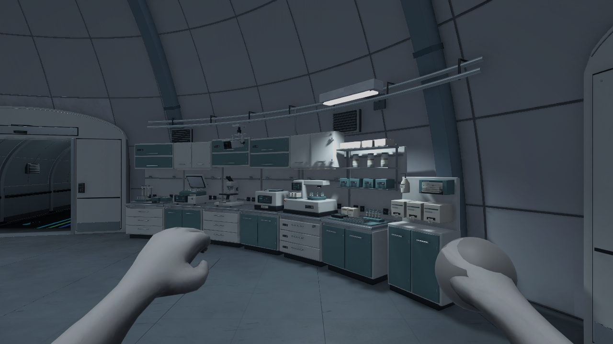
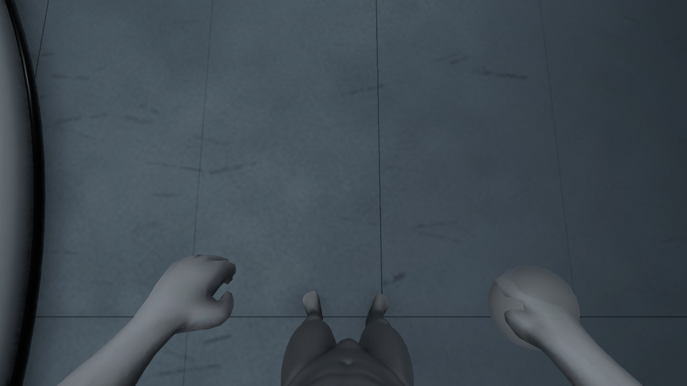
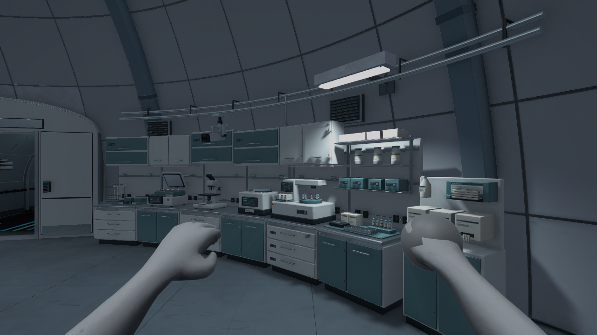
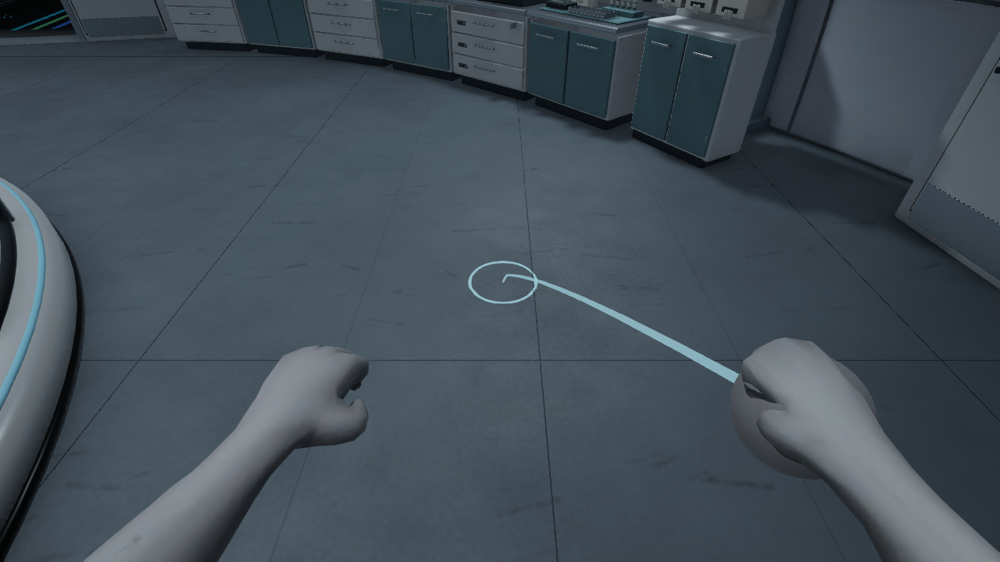
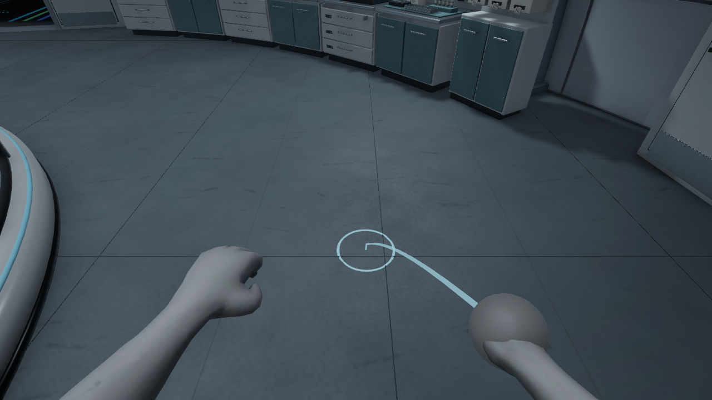
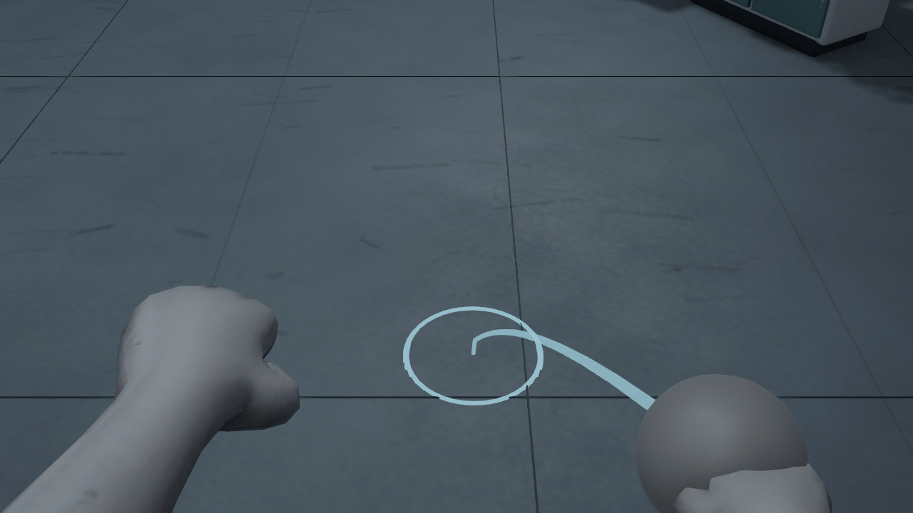
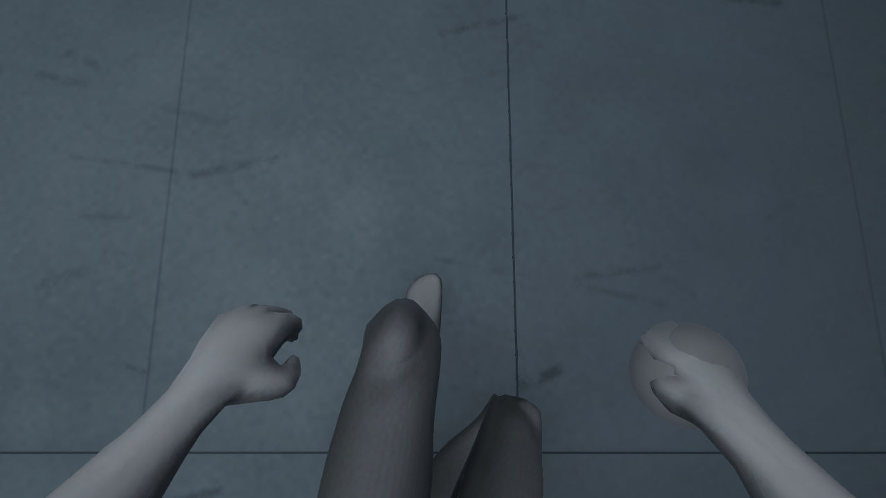

AFTER SECONDS · 2026-11-17 · 송예찬
양손의 움직임, 아래로 보이는 발
실제 B5 플레이 화면. 기존 더미 모델을 재사용한 기능 구현이며, 손·의상과 전용 투척 클립은 후속 아트 작업이다.
구현과 조절값 · 동작 검사 40/40 · 화면 촬영 기록

기본 자세 — 양손 표시
아래 보기 — 다리와 발이동 중 두 순간 비교
버튼으로 실제 촬영한 서로 다른 프레임을 비교할 수 있다. 연속 영상은 아니다.

걷기 A
오른손에서 예상 접촉점까지
원은 예상 접촉 위치를 안내한다. 폭발·피해 범위를 뜻하지 않는다. 취소·막힘·예측 한계에서는 표시를 숨긴다.

첫 접촉까지 이어지는 경로와 바닥 표식

아래 던지기
확대 조준 — 손 흔들림 감소앉은 자세

앉기 클립의 자세에 따라 무릎이 한쪽 발을 가릴 수 있다.